Ein Elopement in den Dolomiten entscheidet man nicht, weil dabei schöne Bilder entstehen. Man entscheidet es, weil man verstanden hat, was ein Hochzeitstag wirklich sein kann.
Die meisten Hochzeiten folgen einem Drehbuch, das vor Jahren für andere Menschen geschrieben wurde. Gästeliste, Bankett, Sitzordnung, Programm. Ein Tag voller Pflichten, an dessen Ende Braut und Bräutigam erschöpft sind und sich kaum erinnern, wann sie zuletzt wirklich miteinander gesprochen haben.
Jasmi und Dominik wollten das nicht. Deshalb der Helikopter. Deshalb der 6. Juni. Deshalb diese Bilder, die nicht wie eine Hochzeit aussehen – sondern wie das Leben.
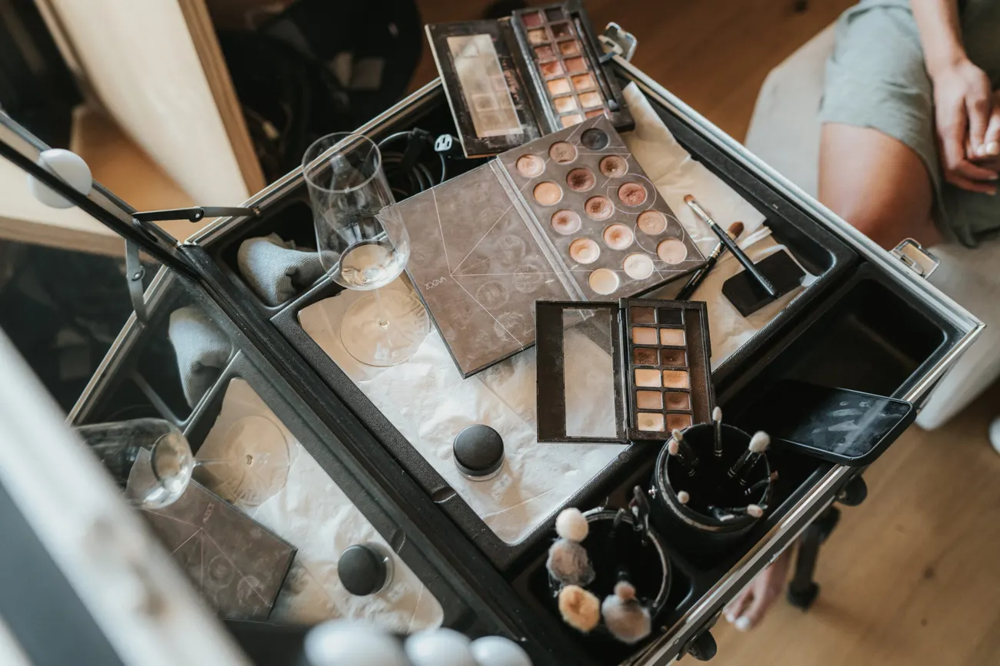
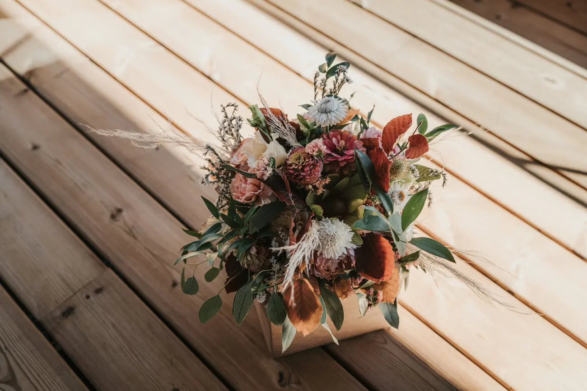
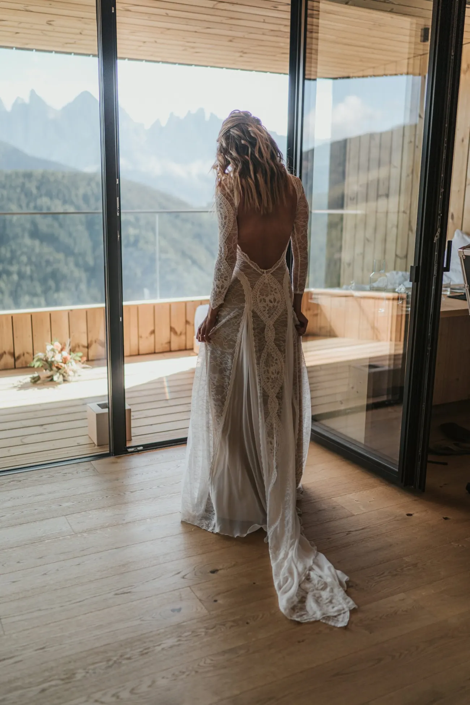
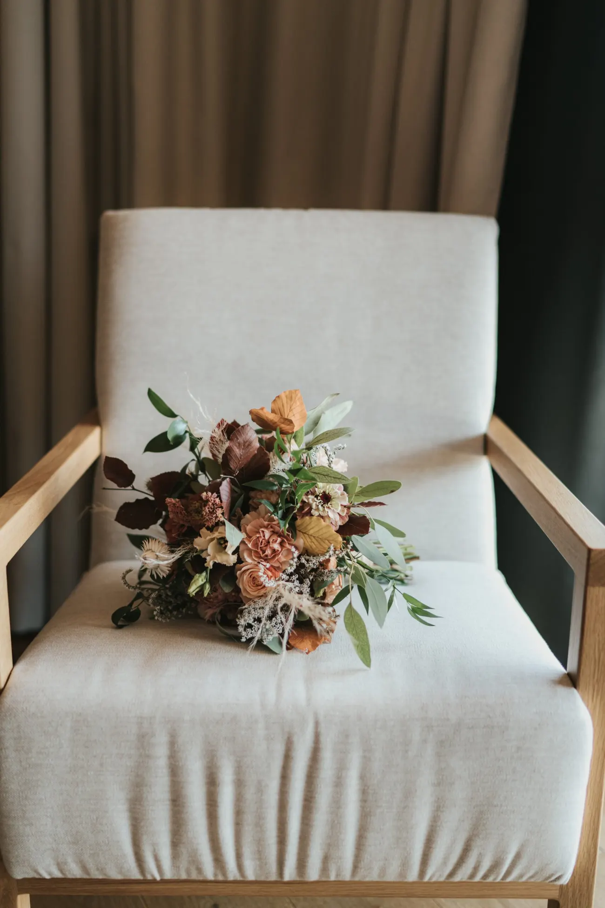
Ein Elopement in den Dolomiten ist das Gegenteil von Pflichterfüllung. Es ist die Entscheidung, den Tag nicht zu organisieren, sondern zu erleben. Kein Zeitplan, der euch durch die Stunden hetzt, keine Erwartungen, die erfüllt werden wollen — nur ihr, das Licht und die Stille.
Diese Berge verlangen etwas. Ein frühes Aufstehen, ein Ja zum Wetter, den Mut, den großen Bahnhof gegen einen einzigen ehrlichen Moment zu tauschen. Wer das nicht will, ist hier falsch. Wer es will, bekommt einen Tag, der ihm ganz allein gehört.
Der Helikopter ist dabei nicht der Luxus, sondern die Abkürzung: Minuten statt Stunden, ein Gipfel, den sonst kaum jemand betritt, und die Gewissheit, ihn für euch allein zu haben. Was bleibt, sind keine Programmpunkte — sondern Bilder, die sich anfühlen wie eine Erinnerung, nicht wie eine Inszenierung.
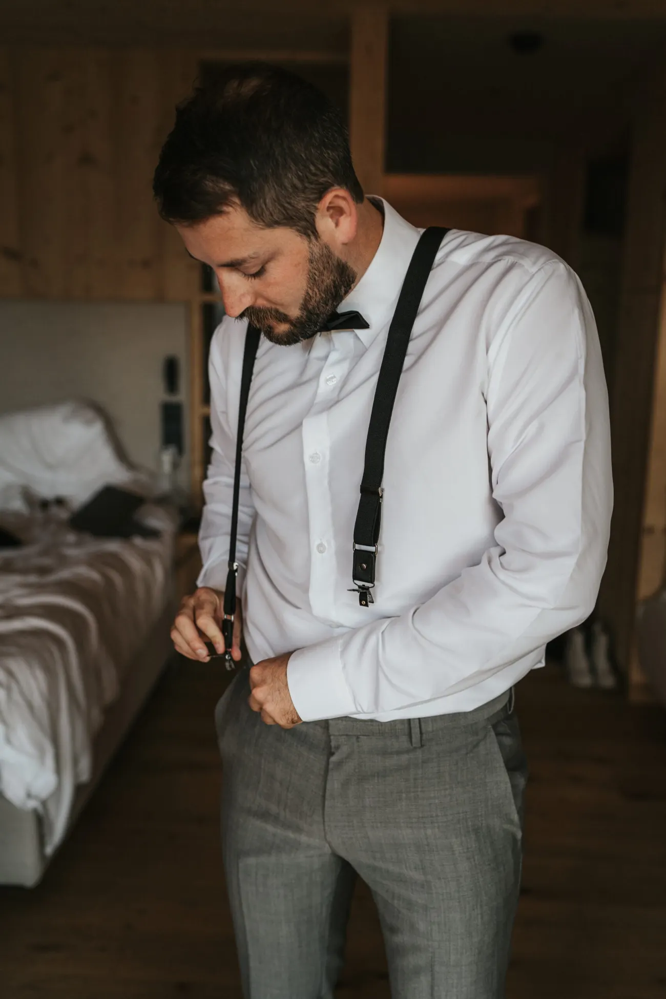
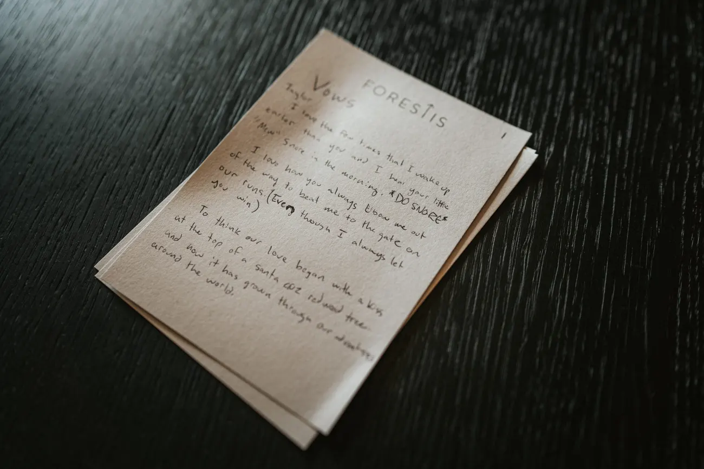
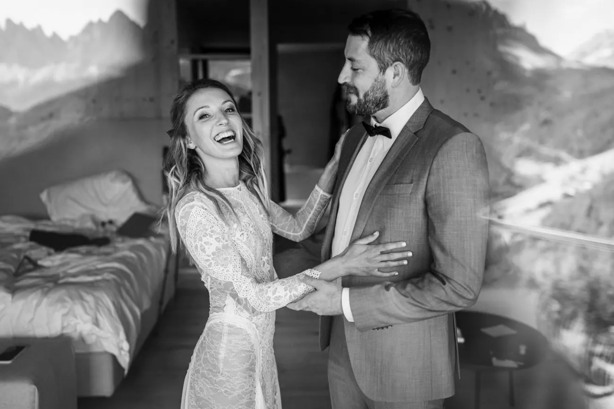
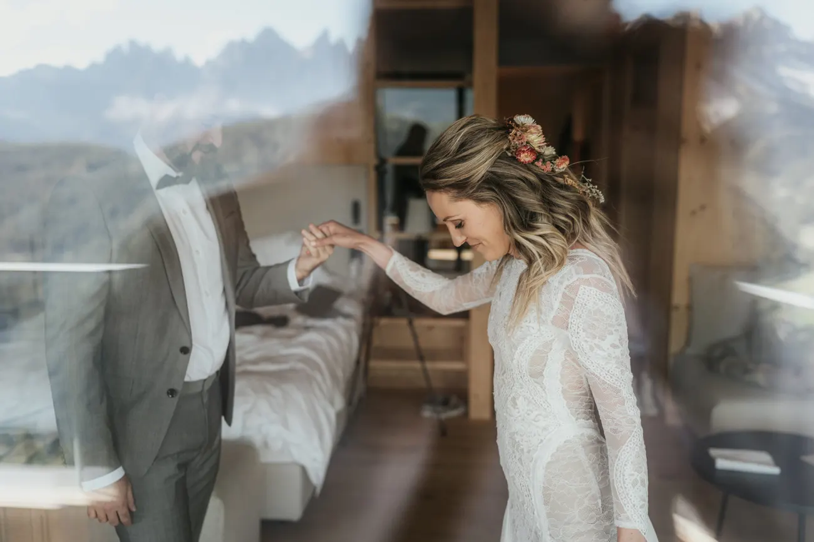
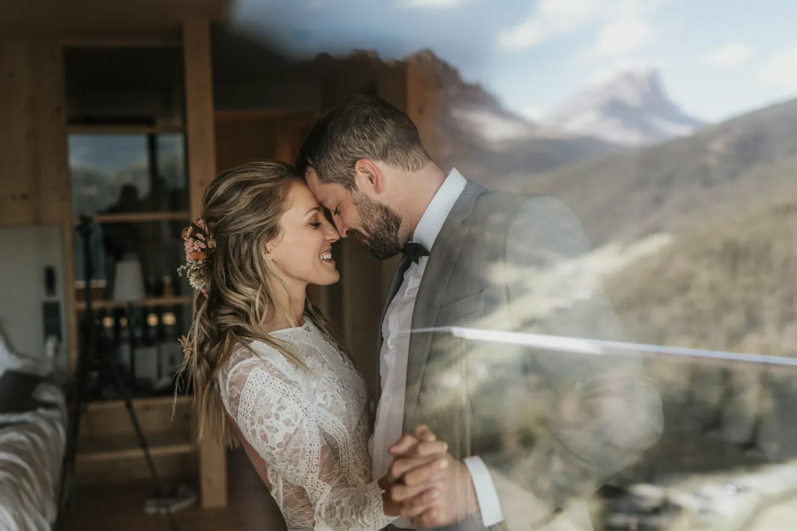
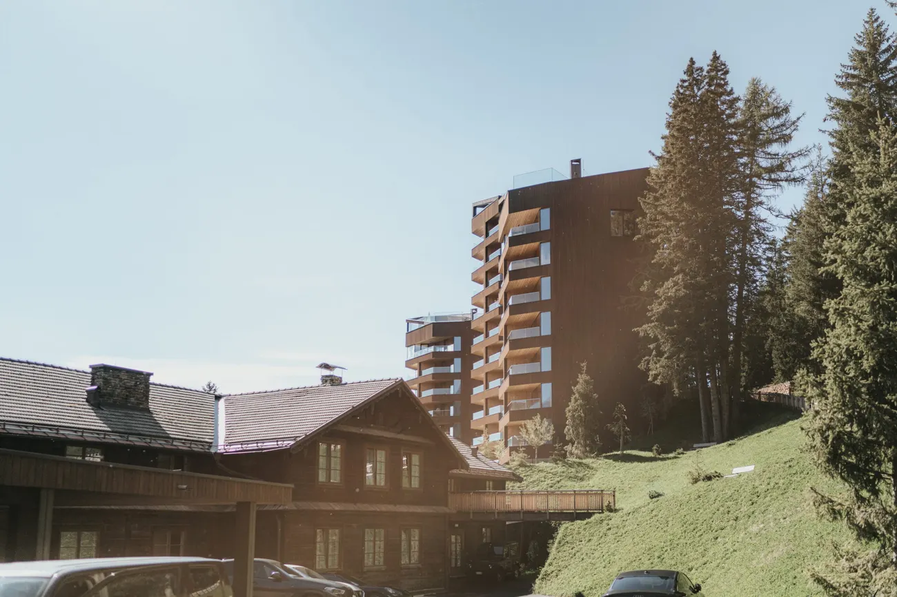
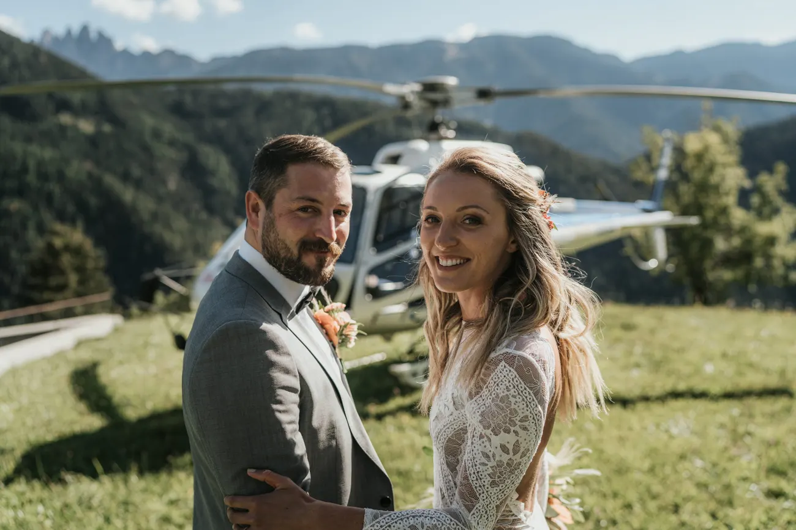
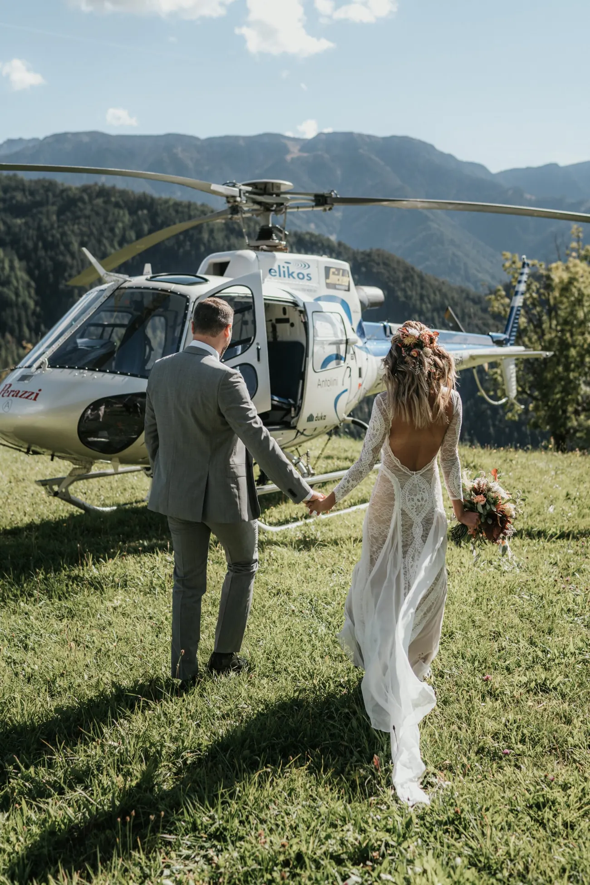
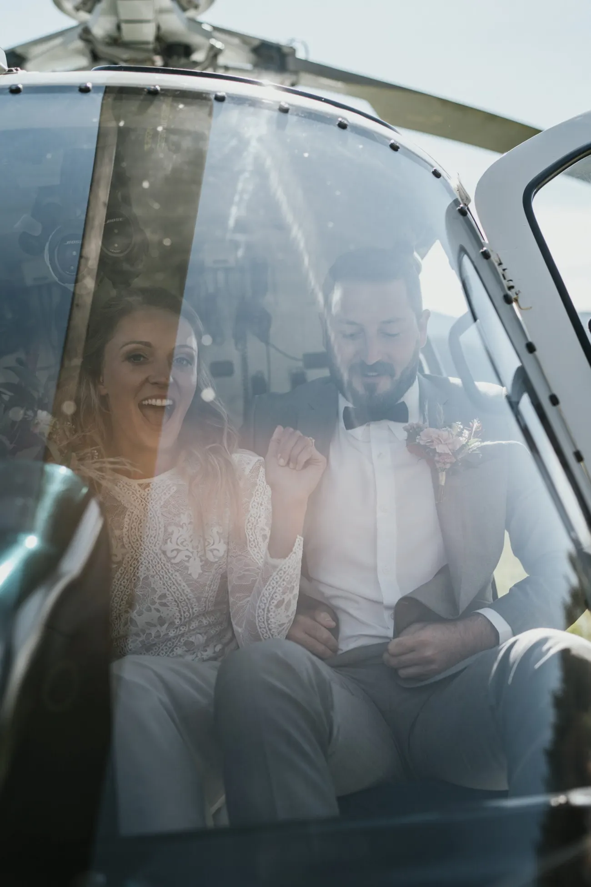